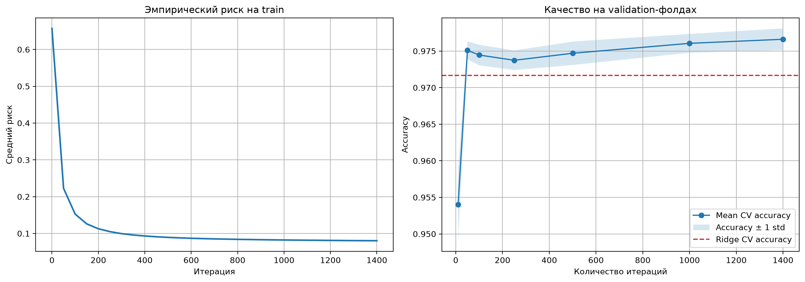
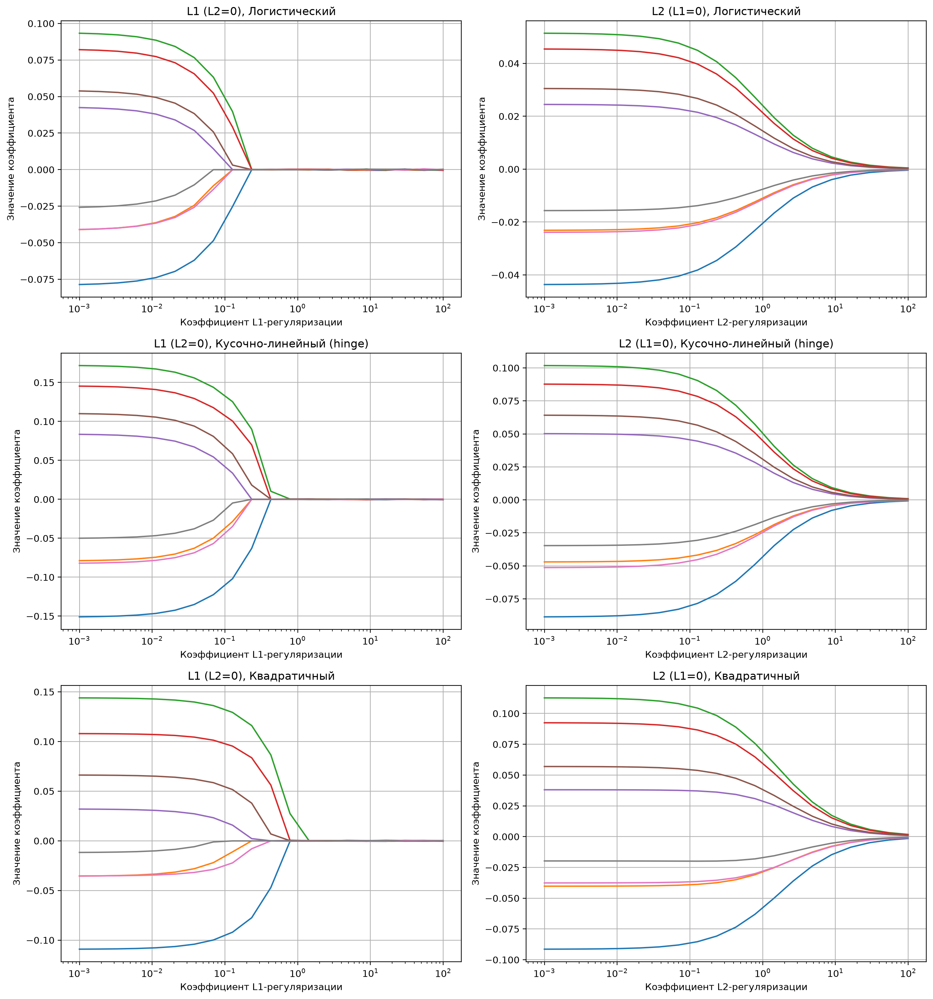
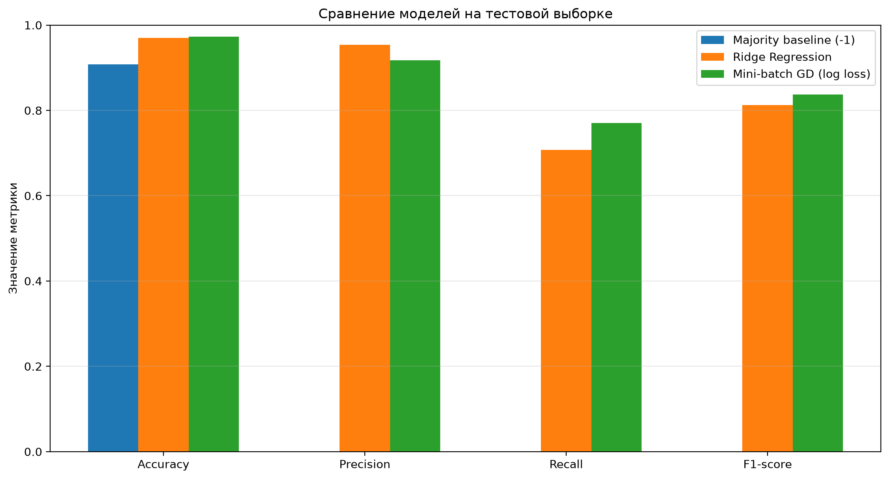

Linear Methods for Pulsar Classification
В чём заключалась задача?
Учебная задача по машинному обучению: по восьми числовым признакам сигнала нужно предсказать, является ли объект кандидатом в пульсары (класс +1) или фоновым шумом (класс −1). Датасет — HTRU2, в нём положительный класс сильно уступает по количеству: константный baseline, всегда предсказывающий «не пульсар», получает около 91% Accuracy, но не находит ни одного объекта положительного класса. Поэтому одной Accuracy недостаточно — качество измеряется по Precision, Recall и F1-score для положительного класса.
Основные требования:
- - самостоятельная реализация линейных моделей, без готовых классификаторов из библиотек
- - аналитическое решение Ridge Regression и линейный классификатор на собственном mini-batch градиентном спуске
- - исследование функций потерь (логистическая, hinge, квадратичная по отступу) и L1/L2-регуляризации
- - корректная методика на несбалансированных данных: подбор гиперпараметров только по обучающей выборке, тестовая — только для финальной оценки
Что сделано?
1. Подготовка данных
- - загрузка
pulsar_stars.csv(HTRU2), приведение целевой переменной к меткам −1 и +1 - - стратифицированное разбиение на обучающую и тестовую выборки 70/30
- - стандартизация признаков: обучается только на обучающих данных
- - добавление свободного коэффициента (bias), который не штрафуется регуляризацией
Во время кросс-валидации стандартизатор для каждого фолда заново подгоняется по соответствующей части обучающей выборки и только затем применяется к validation-части — чтобы информация из validation-фолдов не протекала в обучение.
2. Ridge Regression в матричном виде
Коэффициенты находятся аналитически через решение системы линейных уравнений:
w = (XTX + λI)−1XTy.
В коде используется numpy.linalg.solve, без явного вычисления обратной матрицы.
Параметр регуляризации λ подбирается по пятифолдовой кросс-валидации на обучающей части
данных, критерий выбора — средний F1-score.
3. Линейный классификатор на mini-batch градиентном спуске
Собственная реализация mini-batch градиентного спуска с аналитически вычисляемыми градиентами. Все функции потерь определены через отступ M = y·(w, x), где (w, x) — скалярное произведение:
- - логистическая: log(1 + e−M)
- - hinge loss: max(0, 1 − M)
- - квадратичная по отступу: (1 − M)2
Также реализованы L1- и L2-регуляризация, которые можно комбинировать (Elastic Net). В итоговой конфигурации градиентного классификатора: логистическая функция потерь, шаг обучения 0.1, число итераций выбирается по F1-score на validation-фолдах внутри обучающей выборки.
Методика оценки
Данные разделены на обучающую и тестовую выборки в пропорции 70/30 со стратификацией. Тестовая выборка не используется для выбора гиперпараметров — только для финальной оценки моделей. Используемые метрики:
- - Accuracy — доля правильных предсказаний
- - Precision — доля настоящих пульсаров среди предсказанных положительными
- - Recall — доля найденных положительных объектов
- - F1-score — гармоническое среднее Precision и Recall
Для сравнения добавлен baseline, всегда предсказывающий отрицательный класс: на несбалансированных данных у него высокая Accuracy, но нулевые Recall и F1-score.
Результаты
| Модель | Accuracy | Precision | Recall | F1-score |
|---|---|---|---|---|
| Majority baseline (−1) | 90,84% | 0,00% | 0,00% | 0,00% |
| Ridge Regression | 97,00% | 95,34% | 70,73% | 81,21% |
| Mini-batch GD (log loss) | 97,26% | 91,77% | 77,03% | 83,76% |
Лучший F1-score показал классификатор на mini-batch градиентном спуске с логистической функцией потерь: по сравнению с Ridge Regression Recall вырос с 70,73% до 77,03%, а F1-score — с 81,21% до 83,76%. При этом Precision выше у Ridge Regression — среди предсказанных им положительных объектов доля верных больше. Baseline наглядно показывает, почему Accuracy недостаточно: 90,84% Accuracy при нулевом Recall и F1-score.
Выбранные параметры в этом запуске: Ridge Regression — λ = 0 (по проверенной сетке кросс-валидации лучший средний F1-score получен без штрафа); mini-batch GD — логистическая функция потерь, learning rate 0.1, 1400 итераций, L1 = 0, L2 = 0. Приведённые значения относятся к конкретному разбиению и запуску ноутбука — при изменении данных или настроек они могут отличаться.
Визуализации

Первый график показывает изменение эмпирического риска во время обучения, второй — среднюю Accuracy градиентного классификатора на validation-фолдах в зависимости от количества итераций. Красная пунктирная линия — средняя CV Accuracy Ridge Regression.

Изменение коэффициентов моделей при увеличении силы L1- и L2-регуляризации для логистической, hinge- и квадратичной функций потерь.

Сравнение Accuracy, Precision, Recall и F1-score для Ridge Regression, mini-batch градиентного классификатора и baseline на отложенной тестовой выборке.
Сложности
1. Дисбаланс классов
Положительный класс составляет около 9% данных, поэтому оптимизировать «в лоб» по Accuracy нельзя: baseline с 90,84% Accuracy не находит ни одного пульсара. Основным критерием подбора гиперпараметров сделан F1-score на validation-фолдах, а итоговые модели сравниваются по всем четырём метрикам.
2. Честность оценки
Легко незаметно «подглядеть» в тест: например, подогнать стандартизацию по всем данным или подбирать гиперпараметры по тестовой выборке. Здесь стандартизатор обучается только на обучающих данных, внутри кросс-валидации — заново на каждом фолде, а тестовая выборка открывается один раз для финального сравнения моделей.
3. Интерпретация λ = 0
Кросс-валидация выбрала для Ridge Regression λ = 0 — лучший средний F1-score на проверенной сетке получил вариант без штрафа. Это результат эксперимента на конкретной сетке и разбиении, а не общий вывод о том, что регуляризация не нужна: при других данных или другой сетке λ выбор может отличаться.
4. Ограничения
Шаг обучения, тип функции потерь и коэффициенты регуляризации градиентного классификатора заданы заранее — кросс-валидация выбирает только число итераций, и 1400 — это максимум среди проверенных вариантов, а не гарантия глобально оптимального значения. Это учебная реализация для демонстрации алгоритмов и экспериментов, а не production-пайплайн.
Ссылки
Репозиторий с кодом: github.com/geolav/linear-methods-pulsar-classification
Датасет HTRU2 (CC BY 4.0, Robert Lyon): UCI Machine Learning Repository · Kaggle